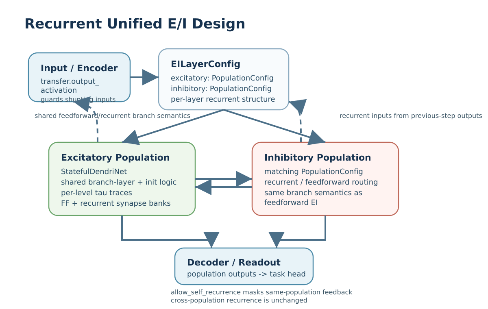

Engineering Architecture
This page is for engineers working inside the repository. It focuses on how the codebase is organized, where the main control points live, and how a run moves from YAML to artifacts.
System Overview
The framework has a small number of stable layers:

The practical rule of thumb is:
config/andconfigs/define intent.src/dendritic_modeling/networksdefines model behavior.src/dendritic_modeling/scriptsturns config into a runnable experiment.src/dendritic_modeling/trainingdefines update rules and training loops.src/dendritic_modeling/analysisturns checkpoints and trajectories into diagnostics.
Repository Layout
The main directories are:
Path |
Responsibility |
|---|---|
|
Structured config dataclasses and config-facing defaults. |
|
Standard dataset loaders, synthetic tasks, and dataset utilities. |
|
Feedforward E/I cores, recurrent E/I cores, dendritic operators, and baselines. |
|
Training strategies such as backprop and local learning variants. |
|
Reusable analyzers and the analysis manager used by training and evaluation scripts. |
|
Top-level experiment entry points, environment setup, and config canonicalization. |
|
Example and experiment YAMLs. |
|
User-facing and engineering-facing documentation. |
Build Path: From YAML to Model
Most experiment entry points follow the same build sequence:

The important engineering points are:
config_utils.canonicalize_model_core_flagsandcanonicalize_rnn_core_flagsnormalize alias-driven settings before model construction.setup_utils.initialize_modelis the standard entry point for creating a model from the resolved config.networks.architectures.factory.get_architectureis the central dispatch point from config type strings to actual modules.post-build gate diagnostics write
init_gate_stats.jsonwhen learnable reactivation gates are present.
Feedforward and Recurrent E/I Consistency
The feedforward and recurrent E/I stacks intentionally share the same branch-level building blocks. The recurrent stack adds temporal state and recurrent routing, but it does not redefine the dendritic branch semantics.


The consistency contract is:
both feedforward and recurrent E/I models use the same branch-layer logic for dendritic integration and reactivation-gate initialization
recurrent aliases only add type-implied flags and recurrent connectivity; they do not change the underlying dendritic branch implementation
allow_self_recurrenceis a recurrent-only extension that masks same-population self-feedback while preserving other recurrent connectivitypositive shunting safety is enforced at the transfer-layer boundary, so raw inputs may be normalized as long as the transfer output is clamped back to a non-negative range before the first shunting layer
Key Runtime Objects
When you are tracing a bug or extending the code, these are the most useful landmarks to keep in mind:
src/dendritic_modeling/scripts/training/train_experiments.py: experiment entry point for standard trainingsrc/dendritic_modeling/scripts/script_utils/setup_utils.py: environment setup and model initializationsrc/dendritic_modeling/scripts/script_utils/config_utils.py: config alias canonicalization and compatibility helperssrc/dendritic_modeling/networks/architectures/factory.py: model factory and architecture dispatchsrc/dendritic_modeling/networks/architectures/excitation_inhibition: feedforward E/I implementationsrc/dendritic_modeling/networks/architectures/recurrent: recurrent unified-EI implementationsrc/dendritic_modeling/analysis/managers/analysis_manager.py: lifecycle coordinator for analyzers
Artifacts and Outputs
A normal run can produce:
resolved
config.jsoncheckpoints and optimizer state
performancesummariesinit_gate_stats.jsonfor gate-aware modelsanalyzer-specific JSON, tensors, and figures
When debugging reproducibility or regressions, the first artifacts to compare are usually:
config.jsoninit_gate_stats.jsonthe first few epoch metrics
analyzer outputs tied to the affected subsystem
How To Extend Safely
For new model or analysis work, the safest extension pattern is:
add or extend a config field in
src/dendritic_modeling/confignormalize any alias behavior in
config_utils.pywire the behavior into the relevant factory or training entry point
add at least one focused test near the changed subsystem
document the new control point in the relevant doc page
That sequence keeps feedforward and recurrent behavior aligned and reduces the chance of config-only drift.